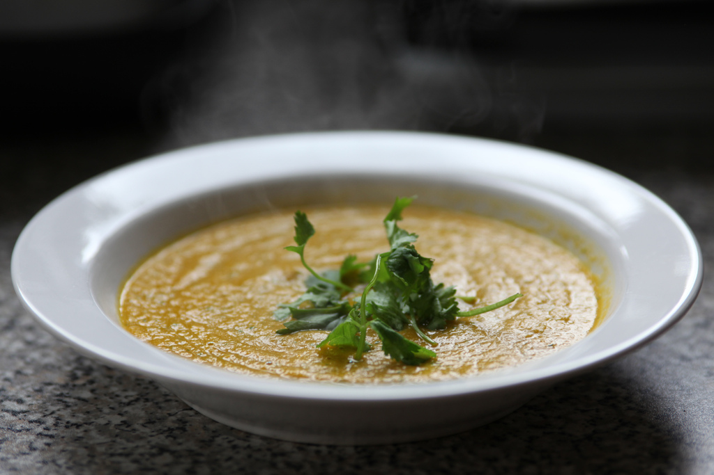
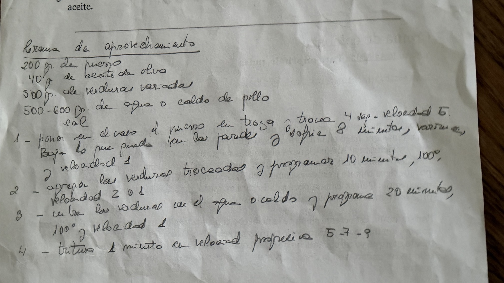

Crema de aprovechamiento
💚 La crema que Marisa prepara con las verduras que tiene por casa. Con puerro como base y una mezcla que cambia cada vez.

Ingredientes
- 200 g de puerro limpio
- 40 g de aceite de oliva, para el sofrito
- 500-600 g de verduras variadas preparadas, además del puerro
- 500-600 g de agua o caldo de pollo
- Sal al gusto; probar antes si el caldo ya lleva sal
Preparación en Thermomix
- Prepara las verduras · 5-10 min
Lava y limpia el puerro y las verduras. Trocea el puerro y corta las verduras en trozos pequeños y similares; deja más pequeños los de zanahoria y boniato. Pesa 500-600 g de verduras preparadas, aparte de los 200 g de puerro.
- Pica y sofríe el puerro · 4 s + 8 min
Pon el puerro en el vaso y pica 4 segundos a velocidad 5. Baja los restos de las paredes con la espátula. Añade los 40 g de aceite y programa 8 minutos, 90 o 100 °C, velocidad 1. Marisa usa una u otra temperatura para evitar que se le queme; ya no utiliza Varoma para este paso.
- Rehoga las verduras · 10 min
Añade las verduras troceadas y programa 10 minutos, 100 °C, velocidad 1 o 2, como indica Marisa.
- Añade el líquido y cuece · 20 min
Vierte 500 g de agua o caldo y añade un poco de sal si hace falta. Programa 20 minutos, 100 °C, velocidad 1. Comprueba que la zanahoria y el boniato estén tiernos; si lo necesitan, prolonga unos minutos. Respeta siempre el nivel máximo del vaso.
- Tritura y ajusta · 1 min, tras dejar bajar la temperatura
Deja bajar la temperatura y sigue las indicaciones de tu modelo para triturar preparaciones calientes. Tritura 1 minuto, aumentando progresivamente por las velocidades 5-7-9 cuando sea seguro según el manual. Si queda espesa, añade poco a poco parte del líquido reservado hasta un total orientativo de 600 g y mezcla. Prueba y ajusta de sal.
Claves
Las verduras cambian según lo que haya en casa. Una mezcla de Marisa: 2 zanahorias, 100 g de calabaza, 1 calabacín y 100 g de boniato; juntas pesaron 600 g, aparte del puerro. Empieza con 500 g de líquido y ajusta al final. El tiempo depende del corte y de la mezcla: las verduras deben estar tiernas. Raciones y tiempo total orientativos.
El tiempo de elaboración es orientativo. No incluye la espera que pueda requerir tu modelo de Thermomix antes de triturar una preparación caliente; consulta su manual.
La receta original de Marisa

Transcripción del manuscrito
Crema de aprovechamiento
- 200 gr. de puerro
- 40 g de aceite de oliva
- 500 gr. de verduras variadas
- 500-600 gr. de agua o caldo de pollo
- Sal
- Poner en el vaso el puerro en trozos y trocea 4 seg. velocidad 5. Baja lo que queda en las paredes y sofríe 8 minutos, Varoma, y velocidad 1.
- Agrega las verduras troceadas y programar 10 minutos, 100°, velocidad 2 o 1.
- Cubre las verduras con el agua o caldo y programar 20 minutos, 100°, velocidad 1.
- Tritura 1 minuto en velocidad progresiva 5-7-9.
Se conserva la indicación de Varoma del manuscrito. En su versión actual, Marisa sofríe a 90 o 100 °C y añade el aceite con el puerro.